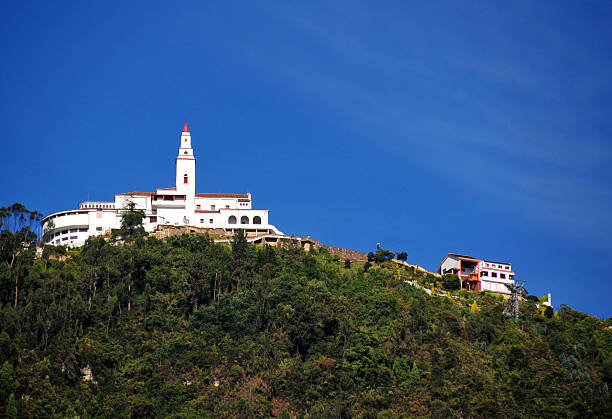

Monserrate is an iconic hill in Bogotá, Colombia, with a Catholic shrine at its summit, a height of 3,152 meters, and panoramic views of the city. It can be ascended on foot, by funicular, or by cable car, and is an important place for religion, gastronomy, and tourism.
